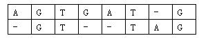
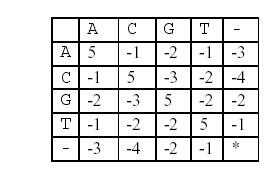
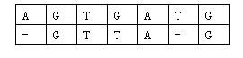

原文连接:https://www.cnblogs.com/I-Love-You-520/p/11145054.html
相似基因
题目
【题目描述】
大家都知道，基因可以看作一个碱基对序列。它包含了4种核苷酸，简记作A,C,G,T。生物学家正致力于寻找人类基因的功能，以利用于诊断疾病和发明药物。
在一个人类基因工作组的任务中，生物学家研究的是：两个基因的相似程度。因为这个研究对疾病的治疗有着非同寻常的作用。
两个基因的相似度的计算方法如下：
对于两个已知基因，例如AGTGATG和GTTAG，将它们的碱基互相对应。当然，中间可以加入一些空碱基-，例如：

这样,两个基因之间的相似度就可以用碱基之间相似度的总和来描述，碱基之间的相似度如下表所示：

那么相似度就是：(-3)+5+5+(-2)+(-3)+5+(-3)+5=9。因为两个基因的对应方法不唯一，例如又有：

相似度为：(-3)+5+5+(-2)+5+(-1)+5=14。规定两个基因的相似度为所有对应方法中，相似度最大的那个。
【输入格式】
共两行。每行首先是一个整数，表示基因的长度；隔一个空格后是一个基因序列，序列中只含A,C,G,T四个字母。
【输出格式】
仅一行，即输入基因的相似度。
【数据规模】
1≤序列的长度≤100。
解析
很明显的一道动态规划题。因为有两组基因，所以不难推出状态：f[i][j]，表示前i个基因A与前j个基因B的相似度。
故得出状态转移方程：f[i][j]=f[i-1][j-1]+x(x表示基因i与基因j的相似度)
由于可以加入空碱基-，所以还有另外两种转移方式：
f[i][j]=f[i][j-1]+x(即在基因A中加入空碱基);
f[i][j]=f[i-1][j]+x(即在基因B中加入空碱基)。
边界为：f[0][0]=0与f[i][0]=f[i-1][0]+x与f[0][i]=f[0][i-1]+x；即无基因与各个基因与空碱基的相似度。
相似度的计算可以采用二维数组存储或函数计算。
Code


#include <algorithm> #include <iostream> #include <cstring> #include <string> #include <cstdio> #include <cmath> using namespace std; int l1,l2,f[101][101];//f[i][j]表示前i个基因A与前j个基因B的相似度 //f[i][j]=f[i-1][j-1]+x或f[i][j-1]+x或f[i-1][j]+x char s1[101],s2[101],s='-'; int xs(char a,char b)//相似度 { if(a==b) return 5; if(a=='A') { if(b=='C') return -1; if(b=='G') return -2; if(b=='T') return -1; if(b=='-') return -3; } if(a=='C') { if(b=='G') return -3; if(b=='T') return -2; if(b=='-') return -4; } if(a=='G') { if(b=='T') return -2; if(b=='-') return -2; } if(a=='T'&&b=='-') return -1; return xs(b,a); } int main() { memset(f,0xcf,sizeof(f)); f[0][0]=0; cin>>l1; for(int i=1;i<=l1;i++) { cin>>s1[i]; f[i][0]=f[i-1][0]+xs(s1[i],s); } cin>>l2; for(int i=1;i<=l2;i++) { cin>>s2[i]; f[0][i]=f[0][i-1]+xs(s2[i],s); } for(int i=1;i<=l1;i++) for(int j=1;j<=l2;j++) { f[i][j]=max(f[i][j],f[i-1][j-1]+xs(s1[i],s2[j])); f[i][j]=max(f[i][j],f[i][j-1]+xs(s2[j],s)); f[i][j]=max(f[i][j],f[i-1][j]+xs(s1[i],s)); } cout<<f[l1][l2]; return 0; }